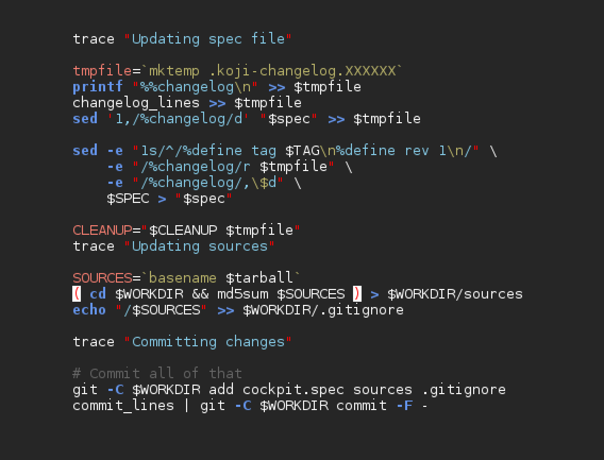

How Cockpit Implemented
DISTRIBUTED SCALEABLE
CONTINUOUS INTEGRATION
Stef Walter
Principal Lead Engineer
Red Hat Summit
Introduction

Our protagonist

Cockpit is a
remote interactive
Linux admin interface
Cockpit calls
System APIs directly
Our supporting cast:
| Atomic |
atomicapp |
DBus |
| Docker |
docker-storage |
GLib |
| journal |
Kubernetes |
libssh |
| libvirt |
LVM |
NetworkManager |
| Openshift |
ostree |
passwd |
| PCP |
polkit |
react |
| realmd |
sosreport |
setroubleshoot |
| setenforce |
ssh-agent |
sssd |
| storaged |
subscription-man |
sudo |
| systemd |
shadow-utils |
timedated |
| tuned |
udev |
udisks |
| /proc and /sys |
... |
Our story's backdrop:
Open Source
Act 1
Cockpit project
lives and dies
by its testing
10,000 testing
instances a day

Continuous Integration

Distributed is key
Distributed scales
Distributed makes
Open Source work
Red Hat QE Testing Upstream

The real magic of continous integration
happens before you merge
Act 2
"Release Early. Release Often.
And listen to your customers."
- - Cathedral and the Bazaar
Delivering every N months
is not often enough
Maintainer release to do list:
- Make sure it works
- Merge some last fixes
- lather, rinse, repeat
- ...
- Tag the release
- Create tarballs
- Sign them
- Upload them
- Send out release notes
- ...
- Profit?
Each packager release to do list:
- Download the tarball
- Build it
- Patches for differences on this distro
- Submit patches upstream
- lather, rinse, repeat
- ...
- Update packaging files like spec files
- Perform scratch builds
- Commit and push changes to spec files
- Create an update to push update into distro
- ...
- Profit?
Sign a tag Becomes a release
Cockpit releases once a week
50 releases a year
- Tarballs
- Koji scratch build
- Fedora commit
- Koji build
- Bodhi update
- COPR builds
- Debian packages
- Ubuntu PPA packages
- Docker Hub containers
- Upload documentation

Packaging Upstream
Patching Upstream
Conclusion
Open Source is
distributed
Open Source
development
is distributed
Open Source
integration testing
should be distributed
Open Source
packaging and patching
should be distributed
Packaging Upstream
Integration Testing Upstream
Open Source = Upstream
Questions?
cockpit-project.org
#cockpit on Freenode
github.com/cockpit-project/cockpit
Credits:
- Flickr: striatic
- Sciguy2013 at English Wikipedia
- Aquilae at French Wikipedia